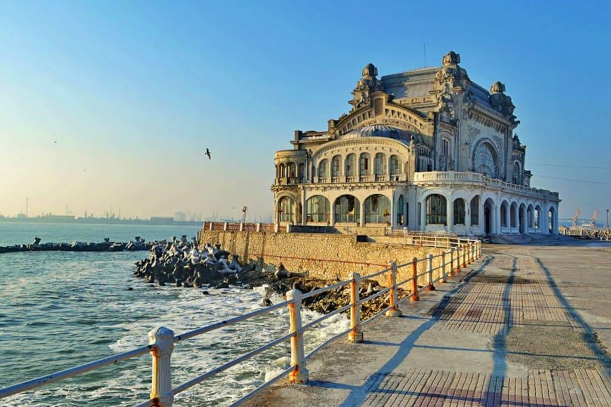

București
Despre București
Localizare: România de Sud Altitudine: 190 - 295 ft (55 - 90 m) Dimensiune: Orașul București - 228 km2; Zona metropolitana a Bucurestiului - 1.521 mp Oraș locuit din anul 500 î.Hr. Prima documentare: 1459 d.Hr. Populație: 1.921 milioane București este capitala României. Este cel mai populat oraș și cel mai important centru industrial și comercial al țării. Populația de 1.921.425 de locuitori face ca Bucureștiul să fie al zecelea oraș ca populație din Uniunea Europeană. Conform unor estimări ale unor specialiști, Bucureștiul adună zilnic peste trei milioane de oameni, iar în următorii cinci ani, acest număr va depăși patru milioane. La acestea se adaugă faptul că localitățile din preajma orașului, care vor face parte din viitoarea Zonă Metropolitană, însumează o populație de aproximativ 430.000 de locuitori. Arcul de Triumf este un monument situat în partea de nord a Bucureștiului, în sectorul 1, la intersecția șoselei Kiseleff cu bulevardele Constantin Prezan, Alexandru Averescu și Alexandru Constantinescu. Monumentul, proiectat de Petre Antonescu, a fost construit în perioada 1921-1922, renovat în perioada 1935-1936, și din nou renovat începând din 2014. El comemorează victoria României în Primul Război Mondial.Arcul de Triumf are 27 m înălțime, cu o singură deschidere și este de formă paralelipipedică. Machetele au fost executate de artiști plastici, iar pentru cioplirea marmurei de Rușchița, pe lângă sculptorii autohtoni, s-a apelat și la un număr de zece sculptori din Italia. Piața Revoluției este o piață din București, aflată în Sectorul 1, denumită tradițional Piața Palatului până la Revoluția Română din 1989. Anterior, în perioada comunistă, purtase și numele de Piața Gheorghe Gheorghiu-Dej. Piața este flancată de o serie de clădiri importante, între care: Palatul Regal din București (care adăpostește Muzeul de Artă), Ateneul Român, Palatul Fundației Universitare Carol I care adăpostește Biblioteca Centrală Universitară, Palatul Ministerului de Interne, Biserica Kretzulescu, hotelul Athénée Palace Hilton. Palatul Parlamentului din București, România cunoscut înainte de revoluție sub numele de Casa Republicii sau Casa Poporului, măsoară 270 m pe 240 m, 86 m înălțime, și 92 m sub pământ. Are 9 nivele la suprafață și alte 9 subterane. Conform World Records Academy, Palatul Parlamentului este a doua cea mai mare clădire administrativă pentru uz civil ca suprafață din lume, si cea mai scumpă clădire administrativă din lume și cea mai grea clădire din lume. Clădirea Palatului Parlamentului se află situată în partea centrală a Bucureștiului(sector 5).
Arad
Despre Arad
Localizare: România de Vest Judetul: Arad Dimensiune: 39,8 km patrati Altitudine: 110 metri Populația: 163.000 Prima documentare: 1459 d.Hr. Arad (similar scris și în germană, maghiară și limba bulgarilor bănățeni; în sârbă Арад, cu alfabet latin Arad) este municipiul de reședință al județului cu același nume, România. Aradul are o populație de 163.000 locuitori, fiind al doisprezecelea cel mai mare centru urban al României din punct de vedere demografic. Municipiul Arad constituie pentru vestul României un punct important în ceea ce privește industria, și este de asemenea un nod important în transporturile feroviare, rutiere, având și aeroport. În privința religiei ortodoxe orașul Arad este reședința scaunului Arhiepiscopal al Aradului.Brașov
Despre Brașov
Localizare: România Centrală (județul Brașov) Dimensiune: 74 km patrati Altitudine: 650 metri Populația: 275.000 Oraș locuit din: 100 î.Hr. Prima documentare: 1234 d.Hr. . Brașov este municipiul de reședință al județului cu același nume, Transilvania, România, format din localitățile componente Brașov (reședința) și Poiana Brașov. Brașovul populație de 275.000 locuitori, fiind unul dintre cele mai mari orașe din țară (totuși în scădere în ultimele două decenii din cauza exodului sașilor și a reducerii activității industriale). Patron al orașului este considerată a fi Fecioara Maria. Statuia acesteia se află pe unul dintre contraforturile Bisericii Negre, îndreptat spre Casa Sfatului, având stema Brașovului sculptată dedesubt în relief.Poiana Brașov dispune de 12 pârtii de schi cu grade diferite de dificultate (Bradul - 458 m, Kanzel - 350 m, Sulinar - 2441 m, Ruia - 540 m, Subteleferic 1 - 495m, Subteleferic 2- 2220 m, Lupului - 2860 m, Drumul Roșu - 3821 m, Stadion - 300 m), terenuri de sport, un lac, discoteci, baruri și restaurante. Cazarea este asigurată în hoteluri de lux, pensiuni, vile sau cabane. De asemenea, în Poiană se află o stație de ambulanță și una de poliție precum și un oficiu poștal.
Cluj-Napoca
Despre Cluj-Napoca
Localizare: România Centrală (județul Cluj) Dimensiune: 179,5 km2 Altitudine: 360 de metri Populația: 325.000 Oraș locuit din: 200 î.Hr. Prima documentare: 1173 d.Hr. Cluj-Napoca, până în 1974 și în limbajul cotidian Cluj, este municipiul de reședință al județului Cluj, Transilvania, România. La recensământul din 2011 era al doilea oraș al României ca populație. Pe plan geografic, se află la distanțe aproximativ egale de București (458 kilometri), Budapesta (460 km) și Belgrad (464 km). Situat pe valea râului Someșul Mic, orașul este considerat capitala neoficială sau inima regiunii istorice Transilvania. Din 1790 până în 1848 și din 1861 până în 1867 a fost capitala oficială a Marelui Principat al Transilvaniei.Constanta
Despre Constanta
Localizare: România de Est (Judet: Constanta) Dimensiune: 58 km2 Altitudine: 0-60 de metri Populația: 298.000 Oraș locuit din: 700 î.Hr. Prima documentare: 300 î.Hr.  Constanța este municipiul de reședință al județului cu același nume, Dobrogea, România, format din localitățile componente Constanța (reședința), Mamaia și Palazu Mare. Constanța se află în județul cu același nume, în partea de sud-est a României. Se situează pe coasta Mării Negre, într-o zonă lagunară la est, deluroasă la nord și în partea centrală, și de câmpie la sud și vest. Orașul Constanța posedă o plajă proprie în lungime de 6 km. Partea de nord a municipiului, Mamaia, cea mai populată stațiune turistică de pe Litoral, se află pe malul unei lagune, având o plajă de 7 km lungime, plajă care continuă cu alți 6 km pe teritoriul orașului Năvodari. Mamaia este o localitate componentă a municipiului Constanța din județul Constanța, Dobrogea, România. Se află în nordul municipiului și este o stațiune turistică de vară a litoralului românesc. Are foarte puțini locuitori permanenți (7 la recensământul din 2002}), fiind însă suprapopulată pe parcursul verii. Mamaia este construită pe un grind litoral între Marea Neagră și limanul numit Siutghiol (Süt-Göl: "lacul lăptos" în turcește). Grindul are o lungime de 8 km, însă o lățime de doar 300 m. Plaja foarte lungă, cu o lățime de până la 250 m, este acoperită cu un nisip foarte fin, parte mineral, parte cochilifer. De-a lungul acesteia se află multe magazine, restaurante, terase, cluburi și discoteci.Craiova
Despre Craiova
Localizare: România de Sud Judetul:: Dolj Dimensiune: 81.4 km2 Altitudine: 90 de metri Populația: 295.000 Oraș locuit din: 700 î.Hr. Prima documentare: 225 î.Hr. Localizare: Municipiul Craiova este situat în sudul României, pe malul stâng al Jiului, la ieșirea acestuia din regiunea deluroasă, la o altitudine cuprinsă între 75 și 116 m. Craiova face parte din Câmpia Română, mai precis din Câmpia Olteniei care se întinde între Dunăre, Olt și podișul Getic, fiind străbătută prin mijloc de Valea Jiului. Orașul este așezat aproximativ în centrul Olteniei, la o distanță de 227 km de București și 68 km de Dunăre. Forma orașului este foarte neregulată, în special spre partea vestică și nordică, iar interiorul orașului, spre deosebire de marginea acestuia, este foarte compact.Iasi
Despre Iasi
Localizare: România de Est (județul Iași) Dimensiune: 96 km2 Altitudine: 105 de metri Populația: 321.000 Oraș locuit din: 400 î.Hr. Prima documentare: 1387 î.Hr. În Iași, se află Biserica „Sf. Nicolae Domnesc”, cea mai veche din oraș, ctitorie a lui Ștefan cel Mare, restaurată integral la sfârșitul secolului XIX. De asemenea, mai pot fi vizitate biserica Trei Ierarhi și Mănăstirea Golia, mărturii ale gusturilor estetice ale unui mare domnitor Vasile Lupu, Catedrala Mitropolitană, Casa Dosoftei, Palatul Culturii, Casa Pogor cu „Masa Umbrelor”, aleile Copoului cu mireasma de tei și cu ecouri de vers eminescian (Teiul lui Eminescu și Muzeul "Mihai Eminescu"), Casele memoriale „Mihail Sadoveanu”, „George Topârceanu”, „Mihai Codreanu”, „Otilia Cazimir”, Biblioteca Universitară „Mihai Eminescu”,
fondată ca bibliotecă a Academiei Mihăilene. Alte monumente importante din perioada medievală sunt: Mănăstirea Galata, din timpul
lui Petru Șchiopul, Biserica Sfântul Sava, (înc. sec. XVII), bisericile Bărboi, Barnovschi, Ioan Zlataust, Sf. Dimitrie, Talpalari,
Sf. Teodor, Sf. Andrei, Sf. Constantin, Sf. Pantelimon, Mănăstirea Cetățuia - ctitorie a lui Gheorghe Duca - sau Mănăstirea Frumoasa,
din sec. XVIII.
„Mihail Sadoveanu”, „George Topârceanu”, „Mihai Codreanu”, „Otilia Cazimir”, Biblioteca Universitară „Mihai Eminescu”,
fondată ca bibliotecă a Academiei Mihăilene. Alte monumente importante din perioada medievală sunt: Mănăstirea Galata, din timpul
lui Petru Șchiopul, Biserica Sfântul Sava, (înc. sec. XVII), bisericile Bărboi, Barnovschi, Ioan Zlataust, Sf. Dimitrie, Talpalari,
Sf. Teodor, Sf. Andrei, Sf. Constantin, Sf. Pantelimon, Mănăstirea Cetățuia - ctitorie a lui Gheorghe Duca - sau Mănăstirea Frumoasa,
din sec. XVIII.
Bacău
Despre Bacău
Localizare: România de Est Dimensiune: 43 km2 Altitudine: 430 de metri Populația: 144.000 Prima documentare: 231 î.Hr. Bacău, supranumit și „orașul lui Bacovia”) este municipiul de reședință al județului cu același nume, Moldova, România. Este situat pe râul Bistrița, pe care în oraș există două centrale hidroelectrice (Bacău I si Bacău II) ce acoperă o parte a consumului local de energie electrică. Suprafața municipiului este de 43 km², iar populația este de 144.307 de locuitori. Orașul este traversat de drumurile europene E85 și E574 ce fac legătura cu Bucureștiul, cu nordul țării și cu Transilvania. Pe cale feroviară legăturile naționale și internaționale se realizează prin rețeaua CFR. Bacăul dispune de un aeroport internațional ce asigură curse regulate către diferite destinații naționale și europene.Pitești
Despre Pitești
Localizare: România de Centrală Dimensiune: 78 km2 Altitudine: 289 metri Populația: 155.000 Prima documentare: 1388 Municipiul Pitești este situat în partea central-sudică a României, între Carpații Meridionali și Dunăre, în nord-vestul regiunii istorice Muntenia. Orașul se află la confluența râului Argeș cu Râul Doamnei, în punctul de intersecție al paralelei de 44°51'30" latitudine nordică cu meridianul de 24°52' longitudine estică. Este un important nod rutier, orașul fiind legat de București prin autostrada A1 (la o distanță de 108 km), dar și prin șoseaua
națională DN7. De la o primă intersecție a lor, în nodul Pitești Est, pornesc DN73 către Brașov (139 km) și DN65 către Slatina
(61 km), iar din acesta din urmă, în centrul Piteștiului pornește DN67B către Drăgășani; DN7 și A1 se mai intersectează și în
nodul Pitești Nord, de unde DN7 continuă spre Râmnicu Vâlcea. Din DN67B, în vestul Piteștiului pornește șoseaua județeană DJ703E,
care duce spre vest la Moșoaia, Băbana, Cocu și Uda.
Este un important nod rutier, orașul fiind legat de București prin autostrada A1 (la o distanță de 108 km), dar și prin șoseaua
națională DN7. De la o primă intersecție a lor, în nodul Pitești Est, pornesc DN73 către Brașov (139 km) și DN65 către Slatina
(61 km), iar din acesta din urmă, în centrul Piteștiului pornește DN67B către Drăgășani; DN7 și A1 se mai intersectează și în
nodul Pitești Nord, de unde DN7 continuă spre Râmnicu Vâlcea. Din DN67B, în vestul Piteștiului pornește șoseaua județeană DJ703E,
care duce spre vest la Moșoaia, Băbana, Cocu și Uda.